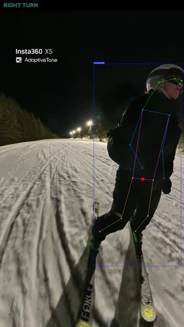
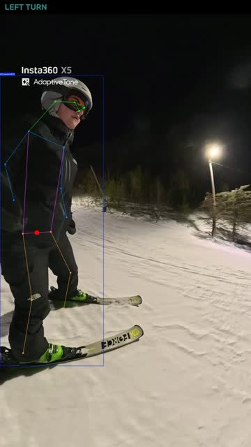
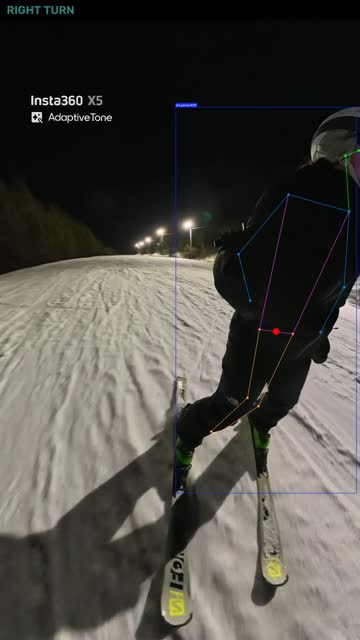
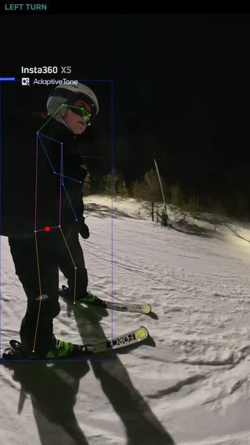

From a real run.
SAMPLE — PIPELINE OUTPUT




Night Run Overlay
A 29-second night run, filmed on a 360° camera. The pipeline tracked the skier through the run, drew the pose skeleton and the center of mass, and split the run into turns. The clip above shows 16 seconds of it, and these frames are the turns in that clip.
- TURNS FOUND
- 9
- DURATION
- 29 s
- FRAMES
- 871
- AVG. CONFIDENCE
- 0.90
NOW—